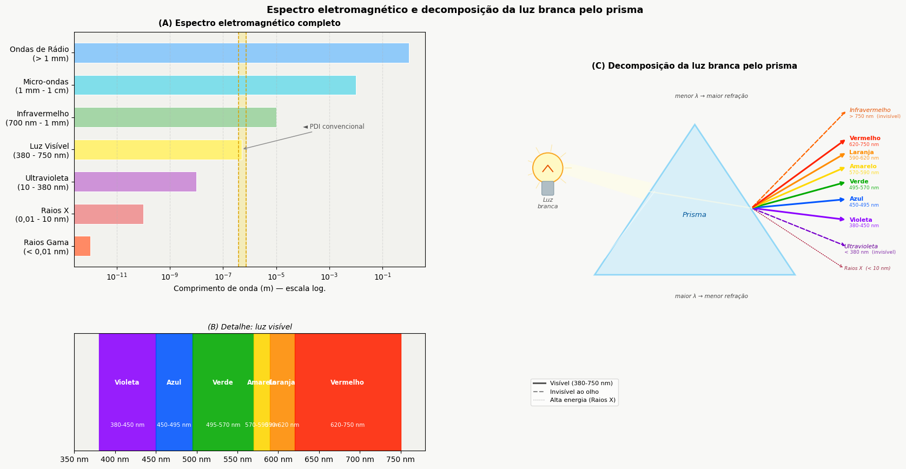
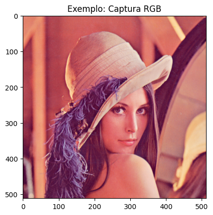
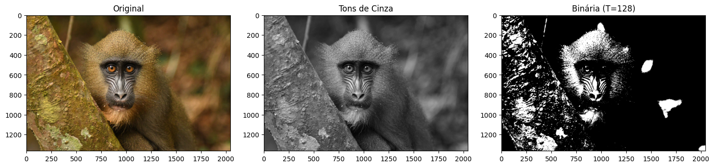
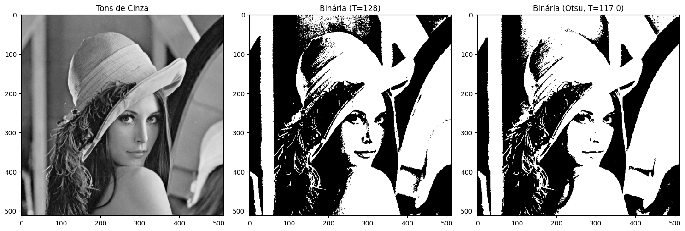
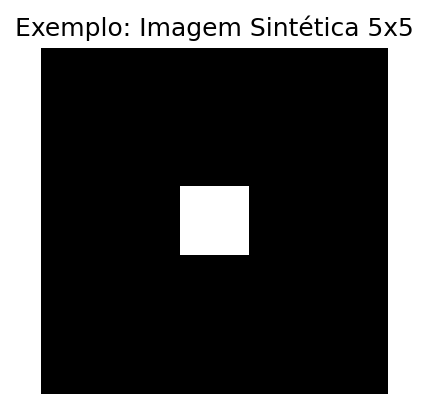

1 Fundamentos e Primeiros Passos


Este capítulo inaugura a Parte 1 do livro, dedicada aos fundamentos do Processamento Digital de Imagens (PDI). São apresentados a representação matemática de imagens digitais e os principais métodos para sua manipulação, utilizando a linguagem Python e a biblioteca morph.py (Zampirolli et al., 2025).
1.1 Objetivos
Ao final deste capítulo, você será capaz de:
- Compreender a natureza física e matemática da imagem digital \(f(x,y)\).
- Identificar as faixas do espectro eletromagnético relevantes para PDI.
- Configurar o ambiente de desenvolvimento em Python.
- Realizar operações básicas: leitura, exibição e salvamento de imagens.
- Manipular estruturas de matrizes (NumPy) sem cair em armadilhas de memória.
- Acessar e modificar intensidades de pixels individualmente.
- Aplicar limiarização manual.
1.2 Antes de começar: Notebooks em Python
Este material foi construído sob o conceito de Literate Programming (Programação Literária), idealizado por Donald Knuth na década de 1980 (Knuth, 1984). Knuth — também criador do sistema TeX para tipografia digital — propôs que os programas fossem escritos como uma narrativa lógica para seres humanos, intercalando código e documentação.
Para executar uma célula, pressione Shift + Enter ou clique no botão ▶️.
NotaNota sobre o formato
Nas versões renderizadas (PDF ou HTML), o código é apresentado em blocos estáticos para fins de leitura e referência. A execução interativa requer o acesso via Google Colab (disponível no topo da página) ou em ambiente local via VSCode ou Jupyter Notebook.
1.3 Fundamentos
O estudo de sistemas baseados em imagens compreende um ecossistema de disciplinas integradas que transformam dados visuais brutos em conhecimento estruturado. Enquanto algumas áreas focam na geração de representações, outras dedicam-se ao tratamento e à análise desses dados para dar suporte a aplicações tecnológicas complexas.
O diagrama apresentado no Figura 1.1 estabelece a distinção e complementaridade entre o Processamento de Imagens (PDI) e a Visão Computacional (VC). O PDI, destacado em verde, tem como foco a transformação de imagem para imagem, visando melhoria de qualidade ou pré-processamento, como a remoção de ruídos e realce de contraste.
Em contrapartida, a VC, assinalada em azul, foca na interpretação do conteúdo visual para extrair modelos ou informações, como o reconhecimento de objetos e gestos. A região de intersecção ilustra a sinergia entre as áreas, onde o PDI prepara os dados visuais para a interpretação pela VC. O mapa também demonstra as interconexões de ambas as disciplinas com áreas como Robótica, Computação Gráfica, Inteligência Artificial e Neurociência.

1.3.1 👁️ Visão Computacional
- Foco: Imagem → Modelo (caminho inverso da Computação Gráfica).
- Objetivo: Extrair informação de alto nível a partir de imagens ou vídeos.
- Aplicações típicas:
- Robótica - detecção de obstáculos, localização e navegação autônoma.
- Vigilância e inspeção - reconhecimento de eventos, leitura de placas, controle de qualidade.
- Sensoriamento remoto - análise de imagens de satélite, mapeamento ambiental.
- Imagens médicas - detecção de tumores, segmentação de órgãos, auxílio ao diagnóstico.
- Interação humano‑computador - reconhecimento de gestos, expressões faciais, rastreamento ocular.
- Relação com outras áreas: utiliza técnicas de Aprendizado de Máquina e IA para classificar e interpretar cenas; serve como “olhos” da Robótica.
1.3.2 🖼️ Processamento Digital de Imagens (PDI)
- Foco: Imagem → Imagem (geralmente - transformação de uma imagem em outra).
- Objetivo: Melhorar a qualidade visual ou extrair características de baixo nível.
- Aplicações comuns:
- Eliminação de ruídos (filtros de média, mediana, gaussiano).
- Melhoria de contraste (equalização de histograma, ajuste gamma).
- Detecção de bordas (Sobel, Canny, Laplaciano).
- Segmentação (limiarização, crescimento de regiões, watershed).
- Transformações geométricas (redimensionamento, rotação, correção de perspectiva).
- Relação com outras áreas:
- É a base para a maioria dos sistemas de Visão Computacional (pré‑processamento).
- A Computação Gráfica frequentemente aplica PDI para pós‑processamento (ex.: suavização, realce).
- Técnicas de IA podem otimizar parâmetros de processamento (ex.: aprendizado de filtros).
- É a base para a maioria dos sistemas de Visão Computacional (pré‑processamento).
1.3.3 Como as outras áreas se conectam
| Área | Relação com PDI e VC |
|---|---|
| Inteligência Artificial | Fornece modelos (redes neurais, SVM) que interpretam saídas da VC. |
| Robótica | Consome dados de VC para tomar decisões (navegação, manipulação). |
| Aprendizado de Máquina | Usa descritores extraídos pelo PDI/VC para treinar classificadores. |
| Computação Gráfica | Caminho inverso: modelo → imagem; muitas vezes aplica PDI para renderização realista. |
| Neurociência | Inspira modelos de PDI (ex.: filtros semelhantes a células ganglionares da retina). |
1.4 Etapas do PDI
As etapas do PDI são apresentadas na Figura 1.2, que podem ser compreendidas como uma cadeia de transformações que reduz a redundância dos dados em busca de significado:
- Baixo Nível: Atua diretamente sobre os pixels da imagem ruidosa para realizar melhorias e filtragens, gerando como saída uma imagem limpa ou realçada.
- Médio Nível: Recebe a imagem tratada e realiza a segmentação e descrição, transformando a matriz de pixels em atributos estruturados (forma, tamanho e textura).
- Alto Nível: Utiliza a tabela de atributos para alimentar processos de lógica e inteligência artificial, resultando na decisão ou reconhecimento final (como o diagnóstico médico).

A Figura 1.3 detalha a sequência completa do processamento, desde a captura até a interpretação. O fluxo inicia-se na Aquisição da Imagem (1) e prossegue com o Melhoramento (2) e a Restauração (3). Em seguida, o conteúdo é isolado pela Segmentação (4) e refinado pela Morfologia (5). A transição crucial ocorre na Representação e Descrição (6), onde objetos visuais são convertidos em dados matemáticos (área, perímetro etc.), permitindo o Reconhecimento (7). Processos auxiliares incluem o Processamento de Imagem Colorida e a Compressão, que contribuem para a eficiência do armazenamento e da análise.

1.5 Formação da Imagem e o Espectro
O processo de formação de uma imagem é fundamentado na interação entre a matéria e a energia radiante. Essencialmente, uma imagem é concebida quando um sensor registra a radiação resultante da interação com um objeto físico. No contexto da visão humana e da fotografia convencional, este fenômeno depende de uma fonte de luz que ilumine a cena; as características dos objetos são então codificadas através das variações de intensidade e cor da luz que atinge o sensor, conforme ilustrado na Figura 1.4.

A luz visível ocupa apenas uma pequena faixa do espectro eletromagnético — entre 380 nm (violeta) e 750 nm (vermelho) — conforme ilustrado na Figura 1.5. Sensores digitais convencionais operam nessa mesma janela, mas equipamentos especializados podem captar radiações invisíveis ao olho humano, como o infravermelho e os raios X. Em PDI, a imagem formada depende diretamente da sensibilidade espectral do sensor utilizado.
1.6 O que é uma Imagem Digital?
Uma imagem digital é formada por uma grade de pixels (Picture Elements), onde cada pixel é a menor unidade elementar da imagem.
DicaO que é um Pixel?
Um pixel é a menor unidade endereçável que compõe uma imagem digital. Cada pixel ocupa uma posição única na grade e armazena um ou mais valores numéricos que representam sua intensidade ou cor.
Representação Matemática
Diferente de uma função contínua, o domínio de uma imagem digital é um plano retangular finito \(\mathbb{E} \subset \mathbb{Z}^2\), que representa a grade de amostragem. Este domínio é indexado por coordenadas inteiras:
\[ \mathbb{E} = \{ (x, y) \in \mathbb{Z}^2 \mid 0 \le x < L,\; 0 \le y < H \} \tag{1.1}\]
Onde:
- \(L\): representa a largura da imagem (número de colunas).
- \(H\): representa a altura da imagem (número de linhas).
A imagem digital é uma função que associa cada par de coordenadas \((x,y)\) a um ou mais valores que descrevem a aparência do pixel.
\[ f: \mathbb{E} \to \mathcal{V} \tag{1.2}\]
O conjunto \(\mathcal{V}\) define os valores possíveis para o pixel (codomínio), variando conforme o tipo de imagem, como demonstrado na Tabela 1.1.
| Tipo de imagem | \(\mathcal{V}\) (valores do pixel) | Representação |
|---|---|---|
| Binária | \(\{0, 1\}\) ou \(\{0, 255\}\) | ⬛◻️ |
| Tons de cinza | \(\{0, 1, \dots, 255\}\) | ░▒▓█ |
| Colorida (RGB) | \(\{0, \dots, 255\}^3\) (triplas ordenadas de valores) | 🟥🟩🟦 |
Exemplo prático: Uma imagem colorida (RGB) é representada matematicamente por uma função que retorna três valores para cada pixel. No computador, isso resulta em três matrizes sobrepostas (canais R, G e B), onde cada célula contém um valor de intensidade para aquele canal específico no pixel.
1.7 Configuração do Ambiente
Este material fundamenta-se no ecossistema científico do Python, com destaque para o NumPy (matemática matricial), OpenCV (visão computacional padrão de mercado) e a biblioteca morph.py (Zampirolli et al., 2025), desenvolvida especificamente para fins didáticos neste livro.
Atualmente, o projeto disponibiliza a versão em Python e Português. A arquitetura do sistema, no entanto, foi projetada para expansão futura, permitindo a adaptação automatizada para outras linguagens de programação (como C++ e Java) e idiomas, por meio de APIs de tradução.
Os Exercícios de Programação (EPs) do final de cada capítulo integram o módulo testsuite.py, já disponível para práticas em Python, C, C++, Java, JavaScript e R, garantindo a validação imediata das soluções propostas nos notebooks de estudo.
1.7.1 📦 Bibliotecas Utilizadas
| Biblioteca | Função principal |
|---|---|
numpy |
Representação matricial de imagens |
opencv-python |
Leitura, escrita e operações de visão computacional |
matplotlib |
Visualização de imagens e gráficos |
morph.py |
Abstração didática das operações de PDI |
NotaVersões do
morph.py
A biblioteca morph.py possui duas versões públicas:
Versão 1.0 — versão original, publicada junto ao artigo apresentado no EduComp 2024: https://github.com/fzampirolli/morph
Versão 1.1 — versão compacta, utilizada nas atividades deste livro: https://github.com/fzampirolli/pdi-vc/blob/master/morph/morph.py
A versão 1.1 foi necessária para uso nas atividades do Moodle/VPL (Laboratório Virtual de Programação). Na versão 1.0, bibliotecas como matplotlib, requests e skimage eram carregadas no momento do import morph, causando erro de memória (Jail: out of memory, 128MiB) no ambiente restrito do VPL.
Na versão 1.1, esses imports foram convertidos para carregamento lazy: cada biblioteca é importada apenas dentro do método que a utiliza, e somente quando esse método é de fato chamado. Assim, um simples import morph carrega apenas numpy e cv2, que são suficientes para a maioria dos EPs.
import os, importlib, urllib.request
# URLs do repositório
BASE_URL = "https://raw.githubusercontent.com/fzampirolli/pdi-vc/master/morph"
for f in ["morph.py"]:
if not os.path.exists(f):
urllib.request.urlretrieve(f"{BASE_URL}/{f}", f)
import morph
importlib.reload(morph)
from morph import mm
# Correção: Verifica se o atributo existe antes de imprimir,
# ou simplesmente confirma o carregamento do módulo.
version = getattr(morph, "__version__", "local_file")
print(f"✅ Ambiente pronto. Módulo 'morph' carregado com sucesso.")
print(f"📦 Funções disponíveis no mm: \n{dir(mm)[-5:]}...") ✅ Ambiente pronto. Módulo 'morph' carregado com sucesso.
📦 Funções disponíveis no mm:
['union', 'verifyBoundBox', 'water0', 'waterB', 'watershed']...1.8 Fundamentos de Matrizes - atenção à cópia de referências
Como uma imagem digital é uma matriz, precisamos saber criá-las corretamente. Em Python, existe uma armadilha comum ao usar o operador * em listas:
AvisoAtenção à cópia de referências
Ao fazer m = [[0]*2]*3, você não cria 3 linhas independentes, mas sim 3 referências para a mesma linha. Alterar um valor em uma linha alterará todas as outras!
Para visualizar esse comportamento, você pode testar o código no Python Tutor e comparar com a forma correta de criar matriz com listas: m = [[0]*2 for _ in range(3)].
A forma recomendada e padrão em Processamento Digital de Imagens é usar NumPy, que cria matrizes com dados independentes e oferece eficiência computacional. O código a seguir mostra diferentes formas de criação de imagens sintéticas — o resultado é exibido na Figura 1.6.
# Criando uma imagem preta (zeros) de 5x5 pixels
img_preta = np.zeros((5, 5), dtype='uint8')
# Criando uma imagem branca (255) de 5x5 pixels
img_branca = np.ones((5, 5), dtype='uint8') * 255
# Criando uma imagem aleatória para testes (Ruído)
img_random = mm.randomImage(4, 6, maxValue=255)
print("Matriz Aleatória Gerada:")
print(mm.drawImage(img_random))
mm.show(img_random, title="Exemplo: Captura RGB")Matriz Aleatória Gerada:
66 164 45 255 131 95
141 52 215 132 43 94
38 75 11 242 97 221
229 253 86 126 153 32

1.9 Lendo e Exibindo Imagens
Em Python, as imagens são lidas como arrays do NumPy. Isso significa que toda a potência da álgebra linear está disponível para o processamento de imagens.
A operação mais básica em PDI é a leitura de uma imagem. A função mm.read() da morph.py aceita caminhos locais e URLs, ver o resultado na Figura 1.7.
# Carregando uma imagem de exemplo via URL
url = "https://upload.wikimedia.org/wikipedia/en/7/7d/Lenna_%28test_image%29.png"
img = mm.read(url)
# Exibindo informações básicas
print(f"Dimensões (H, W, Canais): {img.shape}")
print(f"Tipo de dado: {img.dtype}")
# Exibição estética
mm.show(img, title="Exemplo: Captura RGB")Dimensões (H, W, Canais): (512, 512, 3)
Tipo de dado: uint8
Alternativa: Baixando a imagem localmente
Se por algum motivo a leitura direta da URL não funcionar (firewall, restrições de rede, ou se você preferir trabalhar com arquivos locais), uma abordagem simples é baixar a imagem usando o comando wget (disponível em ambientes Linux, macOS e no Google Colab) e depois carregá-la com mm.read() a partir do arquivo salvo.
!wget -O lena.png https://upload.wikimedia.org/wikipedia/en/7/7d/Lenna_%28test_image%29.pngimg = mm.read('lena.png')
mm.show(img, title="Exemplo: Captura RGB (arquivo local)")Explicação:
!wget -O lena.png <URL>baixa a imagem da Wikimedia e a salva com o nomelena.png.mm.read('lena.png')lê o arquivo local (sem necessidade de cabeçalhos HTTP ou tratamento especial).- Essa estratégia é útil quando você quer evitar dependências de rede durante a execução ou reutilizar a mesma imagem várias vezes sem novo download.
DicaNota
O prefixo ! funciona no Jupyter Notebook, JupyterLab e Google Colab. Em um terminal comum, basta remover o !. Se o wget não estiver instalado, instale-o com apt install wget (Linux) ou use curl -o lena.png <URL> como alternativa.
1.10 Conversão de Tipos e Limiarização
Conforme vimos, uma imagem colorida no espaço RGB é representada pela função:
\[ f: \mathbb{E} \to \{0,1,\dots,255\}^3 \]
Ou seja, para cada pixel \((x,y)\), temos três valores \((R,G,B)\) que definem sua cor.
Conversão para Tons de Cinza
Para converter uma imagem RGB em tons de cinza (grayscale), é necessário combinar os três canais em um único valor de intensidade \(g\), que representa o brilho percebido. Como o olho humano não é igualmente sensível ao vermelho, verde e azul, utiliza-se uma média ponderada. O padrão ITU-R BT.601 (ITU-R, 2011) define os seguintes pesos:
\[ g = 0.299\,R + 0.587\,G + 0.114\,B \tag{1.3}\]
Após o cálculo, o valor \(g\) é arredondado para o inteiro mais próximo e ajustado ao intervalo \([0, 255]\). O resultado é uma nova imagem, agora em tons de cinza, representada por:
\[ f_{\text{cinza}}: \mathbb{E} \to \{0,1,\dots,255\} \]
Limiarização (Thresholding)
A partir da imagem em tons de cinza \(f_{\text{cinza}}(x,y)\), uma operação fundamental é a limiarização, que produz uma imagem binária (apenas preto e branco). Para isso, escolhe-se um valor de corte \(T\) (geralmente no intervalo \([0,255]\)) e define-se:
\[ f_{\text{bin}}(x,y) = \begin{cases} 255 & \text{se } f_{\text{cinza}}(x,y) > T \\[4pt] 0 & \text{caso contrário} \end{cases} \tag{1.4}\]
Exemplo: Com \(T = 128\), pixels com intensidade acima de 128 tornam-se brancos (255); os demais tornam-se pretos (0).
A limiarização é amplamente usada para segmentar objetos do fundo, extrair bordas ou criar máscaras binárias para processamento posterior.
Nota: O valor 255 representa o branco máximo em imagens de 8 bits, enquanto 0 representa o preto absoluto.
Exemplo prático de conversão e limiarização
A Figura 1.8 ilustra os principais passos para transformar uma imagem colorida em tons de cinza e, em seguida, convertê-la em uma imagem binária por limiarização. O código a seguir implementa essas etapas:
import matplotlib.pyplot as plt
# 1. Converter para Tons de Cinza
img_gray = mm.gray(img)
# 2. Aplicar limiar (Pixels > 128 tornam-se 255, outros 0)
limiar = 128
img_binaria = mm.threshold(img_gray, limiar)
# Uso da nova função
mm.show(
[img, img_gray, img_binaria],
titles=["Original", "Tons de Cinza", f"Binária (T={limiar})"],
cols=3
)
1.11 Limiarização pelo método de Otsu
Conforme apresentado na Equação 1.4, a limiarização converte uma imagem em tons de cinza para binária usando um valor de corte \(T\). Até agora fixamos \(T = 128\) manualmente.
img_bin_fixo = mm.threshold(img_gray, T=128)Entretanto, a escolha manual de \(T\) nem sempre é trivial. A biblioteca mm oferece uma alternativa automática: quando o parâmetro limiar não é fornecido, a função mm.threshold(img_gray) calcula o valor de \(T\) pelo método de Otsu (Otsu, 1979). Esse método, que será detalhado em capítulos futuros, maximiza a variância entre classes do histograma, separando automaticamente os pixels de objeto e fundo.
O código abaixo compara a limiarização manual (\(T=128\)) com a automática (Otsu), mostrando também o valor de \(T\) calculado:
import cv2
# Limiarização com T fixo (manual)
T_fixo = 128
img_bin_fixo = mm.threshold(img_gray, T_fixo)
# Limiarização pelo método de Otsu (T automático)
T_otsu, img_bin_otsu = cv2.threshold(img_gray, 0, 255,
cv2.THRESH_BINARY + cv2.THRESH_OTSU)
print(f'Limiar calculado por Otsu: T = {T_otsu}')
# ou simplesmente:
# img_bin_otsu = mm.threshold(img_gray)
# Exibição lado a lado
mm.show(
[img_gray, img_bin_fixo, img_bin_otsu],
titles=["Tons de Cinza", f"Binária (T={T_fixo})", f"Binária (Otsu, T={T_otsu})"],
cols=3
)Limiar calculado por Otsu: T = 117.0
A Figura 1.9 mostra que o limiar obtido por Otsu se adapta automaticamente à imagem, resultando em uma binarização mais eficiente do que um valor fixo, especialmente quando as intensidades do objeto e do fundo são bem separadas no histograma. Essa técnica é amplamente utilizada em sistemas de visão computacional para binarização de documentos, detecção de objetos e pré‑processamento de imagens.
DicaSimplicidade da biblioteca
morph.py
Enquanto o OpenCV exige a chamada completa:
T_otsu, img_bin = cv2.threshold(img_gray, 0, 255,
cv2.THRESH_BINARY + cv2.THRESH_OTSU)a biblioteca mm abstrai toda essa complexidade: basta chamar mm.threshold(img_gray). O limiar de Otsu é calculado automaticamente e a imagem binária é retornada diretamente. Essa abordagem permite concentrar-se no conceito, não nos detalhes de implementação.
1.12 Acesso a Pixels
Em Python com NumPy, uma imagem é representada como um array multidimensional. Para acessar um pixel específico, utilizam-se as coordenadas linha (eixo Y) e coluna (eixo X): img[linha, coluna].
O código abaixo demonstra como obter o valor de um pixel em uma imagem RGB e em sua versão em tons de cinza, além de criar uma pequena imagem sintética para visualizar a estrutura de uma matriz de pixels.
import numpy as np
import matplotlib.pyplot as plt
# Coordenadas do pixel que queremos examinar
r, c = 100, 100
# Acessa o pixel na imagem em tons de cinza (um valor escalar)
pixel_cinza = img_gray[r, c]
# Acessa o pixel na imagem colorida RGB (vetor de 3 valores)
pixel_rgb = img[r, c]
print(f'Pixel na posição ({r},{c}):')
print(f' - Tons de cinza : {pixel_cinza}')
print(f' - RGB : R={pixel_rgb[0]}, G={pixel_rgb[1]}, B={pixel_rgb[2]}')
# Cria uma imagem sintética 5×5 com todos os pixels pretos (0)
syn = np.zeros((5, 5), dtype=np.uint8)
# Torna o pixel central (linha 2, coluna 2) branco (255)
syn[2, 2] = 255
print("\nMatriz da imagem sintética 5×5:")
print(syn)
# Exibe a imagem sintética
# plt.figure(figsize=(3, 3))
# plt.imshow(syn, cmap='gray', vmin=0, vmax=255)
# plt.title("Imagem sintética 5×5\n(pixel central branco)")
# plt.axis('off')
# plt.tight_layout()
# plt.show()
# ou simplesmente:
mm.show(syn, title="Exemplo: Imagem Sintética 5x5")Pixel na posição (100,100):
- Tons de cinza : 102
- RGB : R=178, G=68, B=78
Matriz da imagem sintética 5×5:
[[ 0 0 0 0 0]
[ 0 0 0 0 0]
[ 0 0 255 0 0]
[ 0 0 0 0 0]
[ 0 0 0 0 0]]
Explicação linha a linha:
img_gray[r, c]- retorna um único número inteiro entre 0 e 255, correspondente ao nível de cinza naquela posição.
img[r, c]- retorna uma tupla ou array com três valores (R, G, B).
np.zeros((5,5), dtype=np.uint8)- cria uma matriz \(5\times 5\) preenchida com zeros (preto).
syn[2, 2] = 255- altera o elemento central da matriz para 255 (branco), demonstrando como modificar um pixel.
- A exibição com
plt.imshowrevela um pequeno quadrado com um ponto branco no meio, ilustrando visualmente a estrutura discreta da imagem.
A Figura 1.10 mostra os valores impressos e a imagem sintética. A indexação em Python é zero‑based; portanto, o canto superior esquerdo corresponde a (0,0). A ordem linha × coluna corresponde à estrutura matricial da imagem: primeira dimensão → altura (Y), segunda dimensão → largura (X).
1.13 Resumo
Neste capítulo, apresentaram-se os fundamentos de representação de imagens digitais: a definição de pixel, a estruturação de imagens em matrizes e o impacto da amostragem e da quantização na qualidade final:
- Imagem digital = função \(f(x,y)\) que mapeia coordenadas para intensidades (escalares ou vetoriais).
- Domínio: conjunto finito \(\mathbb{E} = \{(x,y) \in \mathbb{Z}^2 \mid 0 \le x < L,\; 0 \le y < H\}\).
- Tipos principais: binária (\(\mathcal{V} = \{0, 255\}\)), tons de cinza (\(\mathcal{V} = [0,255]\)) e RGB (\(\mathcal{V} = [0,255]^3\)).
- A biblioteca
morph.py(oumm) oferece funções didáticas para operações básicas de PDI, comomm.gray(),mm.threshold(),mm.show_multiple(). - Armadilha NumPy: nunca use
[[0]*n]*mpara criar matrizes — use semprenp.zeros()ounp.ones(). - Limiarização converte tons de cinza em binária; o método de Otsu determina o valor de corte automaticamente maximizando a variância entre classes.
- Acesso a pixels via
img[linha, coluna], com indexação zero-based.
O Capítulo 2 abordará histogramas e equalização de contraste.
1.14 🤖 Uso do NotebookLM como Tutor Complementar
Nesta edição, além dos notebooks interativos no Google Colab, incentivamos o uso do NotebookLM como ferramenta complementar de aprendizagem. Essa ferramenta de IA utiliza exclusivamente os documentos fornecidos pelo autor como base de conhecimento, garantindo respostas coerentes com o conteúdo do livro.
Para cada capítulo, preparamos um projeto específico na plataforma. Para uma experiência de estudo ampliada, utilize o acesso abaixo:
Funcionalidades Disponíveis na Plataforma
O NotebookLM oferece uma suíte avançada de ferramentas baseadas em IA para transformar o conteúdo estático do livro em uma experiência de aprendizado dinâmica e multimídia. Conforme ilustrado na Figura 1.11, a plataforma utiliza técnicas de RAG (Retrieval-Augmented Generation), fundamentadas no trabalho de Lewis et al. (2020), para basear as respostas estritamente nos documentos fornecidos e minimizar a ocorrência de alucinações.
As principais funcionalidades incluem:
- Resumos Multimodais (Áudio e Vídeo): Geração de conversas naturais entre especialistas no formato de Resumo em Áudio (estilo podcast) e Resumo em Vídeo, discutindo os temas centrais do capítulo, como as diferenças entre processamento de imagens e visão computacional, ou a interpretação de transformações como a limiarização e o método de Otsu.
- Visualização de Estruturas (Mapa Mental e Infográfico): Criação automática de diagramas que conectam visualmente os conceitos, por exemplo, o fluxo de processamento desde a captura da imagem digital, passando pela conversão para tons de cinza, limiarização e segmentação binária.
- Ferramentas de Avaliação (Teste e Cartões Didáticos): Geração de Testes de múltipla escolha e Cartões Didáticos (flashcards) para fixação de conhecimento, baseados no texto autoral (ex.: perguntas sobre a fórmula de conversão RGB→cinza ou sobre o funcionamento do limiar global e de Otsu).
- Apoio à Apresentação (Slides e Relatórios): Auxílio na estruturação de Apresentações de Slides e na redação de Relatórios técnicos e Briefings, facilitando a comunicação de resultados de experimentos com imagens.
- Análise de Dados (Tabela de Dados): Organização de dados extraídos do texto em tabelas estruturadas, auxiliando na compreensão de exemplos práticos, como a comparação entre diferentes valores de limiar.
- Chat Contextualizado: Permite o questionamento direto sobre o código e a teoria, como: “Como implementar a conversão de RGB para tons de cinza usando os pesos do padrão ITU‑R BT.601?” ou “O que acontece com a imagem binária se eu escolher um limiar T=200 em vez de T=128?”.

1.15 Lista de Exercícios
(15%) Com suas próprias palavras, defina imagem digital e pixel. Dê um exemplo concreto de como uma imagem colorida (RGB) é representada matricialmente no computador.
(15%) Explique as diferenças entre imagem binária, tons de cinza (8 bits) e colorida RGB, indicando a faixa de valores possíveis para cada pixel em cada tipo.
(20%) Considerando a fórmula de conversão RGB → tons de cinza do padrão ITU‑R BT.601: \[g = 0.299\,R + 0.587\,G + 0.114\,B\] Calcule o valor do pixel em tons de cinza para \((R,G,B) = (80, 180, 30)\). Arredonde para o inteiro mais próximo.
(20%) O que é limiarização (thresholding)? Explique a diferença entre escolher um limiar \(T\) fixo (ex.: \(T=128\)) e utilizar o método de Otsu para determinação automática do limiar. Em poucas palavras, como o método de Otsu escolhe o limiar?
(15%) No contexto da biblioteca didática
mmdiscutida no capítulo, responda:- (7,5%) Como se acessa o valor do pixel na posição (linha=50, coluna=60) de uma imagem em tons de cinza
img_gray?
- (7,5%) Como se acessa o valor do pixel na posição (linha=50, coluna=60) de uma imagem em tons de cinza
- (7,5%) Qual é a vantagem de usar
mm.threshold(img_gray)sem passar o limiar? Compare com a chamada equivalente no OpenCV.
- (7,5%) Qual é a vantagem de usar
(15%) O que a propriedade
img.shaperetorna para uma imagem NumPy no formato RGB? Dê um exemplo concreto com uma imagem de 640×480 pixels.
Referências do Capítulo
A fundamentação teórica deste capítulo compreende as seguintes obras de processamento de imagens e visão computacional:
- Gonzalez; Woods (2018) para os fundamentos de Processamento Digital de Imagens (PDI).
- Singh (2019) para a implementação prática de métodos de processamento e análise de imagens.
- Szeliski (2022) para o estudo de visão computacional e algoritmos fundamentais.
- Bradski; Kaehler (2008) para a aplicação da biblioteca OpenCV em ambiente Python.
- Lewis et al. (2020) para o conceito de geração aumentada por recuperação (RAG), utilizado no suporte ao processamento de informações deste material.


1.16 💻 Parte Prática com Exercícios de Programação
🎯 Objetivo deste Caderno
Os Exercícios de Programação (EPs) apresentados a seguir podem ser submetidos também em atividades do Moodle (atividades VPL) que fornecem feedback automático.
Este caderno foi desenvolvido para superar limitações de uso do Moodle. Com ele, deve-se:
- Desenvolver: Escrever e editar sua solução diretamente no ambiente Colab.
- Validar: Testar seu código localmente utilizando os mesmos casos de teste do Moodle.
- Organizar: Salvar seus códigos das atividades VPL de forma segura.
- Avaliar: Quando estiver conectado ao Moodle, basta copiar sua solução e clicar em Avaliar no Moodle para registrar sua nota oficial.
⚙️ Instruções Passo a Passo
Em um ambiente de execução (como VSCode, Jupyter ou Colab), siga a ordem abaixo para configurar o ambiente e validar seus exercícios:
Preparação do Ambiente
Execute a célula de código abaixo para baixar morph.py e testsuite.py do repositório da disciplina — apenas se ainda não existirem no diretório local. Com ambos em ./, o notebook e os subprocessos do TestSuite encontram o módulo sem configurações extras de caminho.
Nota: O script testsuite.py buscará automaticamente os casos de teste em all/{cap}/cases no GitHub.
Escrevendo o Código
Salve sua solução em uma célula de código usando o comando mágico %%writefile. O nome do arquivo deve seguir o padrão EPX_Y.*, onde X é o capítulo, Y é o exercício e * é a extensão da linguagem.
Exemplo:
%%writefile EP01_01.py
Download
Baixe morph.py e testsuite.py executando a célula abaixo:
import os, sys, importlib, inspect, urllib.request
# URLs do repositório
BASE_URL = "https://raw.githubusercontent.com/fzampirolli/pdi-vc/master/morph"
for f in ["morph.py", "testsuite.py"]:
if not os.path.exists(f):
urllib.request.urlretrieve(f"{BASE_URL}/{f}", f)
import morph, testsuite
importlib.reload(morph); importlib.reload(testsuite)
from morph import mm
from testsuite import TestSuite
print(f"✅ Ambiente pronto. Morph: {morph.__version__} | TestSuite: {testsuite.__version__}")✅ Ambiente pronto. Morph: 1.1.0 | TestSuite: 1.1.0Executando os Testes
Após salvar o arquivo com sua solução, execute o comando abaixo (em uma nova célula) para avaliar os testes automáticos:
TestSuite("EP01_01.extensão").run()Substitua a extensão conforme a linguagem usada:
| Linguagem | Extensão |
|---|---|
| Python | .py |
| Java | .java |
| C | .c |
| C++ | .cpp |
| JavaScript | .js |
| R | .r |
Como funciona: O
TestSuitebaixa os casos de teste do GitHub, executa seu programa com cada entrada e compara a saída com a esperada – calculando automaticamente sua nota.
⚠️ Importante: Regras e Boas Práticas
🔹 Sobre a Entrada de Dados
O seu programa deve ler a entrada padrão (teclado).
- Python: Utilize
input(). - Outras linguagens: Utilize o comando de leitura padrão equivalente (
cin,Scanner, etc.).
🔹 Configuração de IA no Colab
Para um melhor aprendizado, recomenda-se desativar o preenchimento automático de código por IA, pois não estará disponível durante as avaliações. Por exemplo no navegador Chrome:
- Vá em: Ferramentas > Configurações > IA generativa
- Desmarque: Habilitar geração de código
🔹 Integridade Acadêmica (Plágio)
Este recurso de testes locais aplica-se a EPs sem variações. No entanto:
- Individualidade: Cada aluno deve desenvolver sua própria solução.
- Detecção de Similaridade: O professor utiliza ferramentas que detectam cópias, mesmo com alteração de nomes de variáveis ou espaços em branco.
1.16.1 EP01_01 📏 Três métricas de distância em PDI
Nesta atividade, você deve escrever um programa que calcule as três distâncias mais usadas em PDI: Euclidiana (L2), City‑Block (L1) e Chessboard (L∞).
- Leia 4 números reais que representam as coordenadas: \(A_x, A_y, B_x, B_y\).
- Calcule as três distâncias utilizando as fórmulas:
\[d_{\text{Euclidiana}} = \sqrt{(B_x - A_x)^2 + (B_y - A_y)^2}\]
\[d_{\text{City-block}} = |B_x - A_x| + |B_y - A_y|\]
\[d_{\text{Chessboard}} = \max\big(|B_x - A_x|,\; |B_y - A_y|\big)\]
- Imprima os três resultados, cada um em uma linha, formatados com duas casas decimais, na ordem: Euclidiana, City‑block, Chessboard.
📌 Importante:
- Utilize as funções matemáticas padrão da sua linguagem:
math.sqrt,abs(oufabs) emax. - A saída deve conter apenas os números (um por linha), sem textos adicionais.
- Ver um simulador interativo para esta questão na Figura 3.17 (gráfico com arrasto dos pontos e visualização das três métricas).
1.16.1.1 🖼️ Por que isso importa? – Custo computacional
Em uma imagem 1000×1000 pixels (1 milhão de pixels), calcular a distância de cada pixel a um ponto de referência exige 1 milhão de operações. A escolha da métrica afeta o desempenho:
| Métrica | Operações por pixel | Custo relativo (1M pixels) | Quando usar |
|---|---|---|---|
| Euclidiana (L2) | 2 subtrações, 2 multiplicações, 1 soma, 1 sqrt |
🔴 Mais custosa – sqrt é cara |
Distância “real” no espaço contínuo |
| City‑block (L1) | 2 subtrações, 2 abs, 1 soma |
🟡 Moderada – sem raiz quadrada | Grids, robótica, imagens binárias |
| Chessboard (L∞) | 2 subtrações, 2 abs, 1 max |
🟢 Mais eficiente | Movimentos de peças, morfologia |
A função sqrt é computacionalmente mais cara que operações como adição, subtração, multiplicação e valor absoluto. Em CPUs modernas, a diferença pode ser pequena (cerca de 1,5× a 3×), mas em sistemas embarcados ou em laços de milhões de iterações, qualquer ganho importa. Por isso, quando o objetivo é apenas comparar distâncias (ex.: encontrar o ponto mais próximo), use a distância euclidiana ao quadrado.
1.16.1.2 📋 Tarefa (especificação para VPL)
Entrada:
Uma única linha com quatro números reais: Ax Ay Bx By
Saída:
Três linhas, cada uma com um número real de duas casas decimais (Euclidiana, City‑block, Chessboard).
1.16.1.3 📌 Exemplos
| Entrada | Saída | Observação |
|---|---|---|
0034 |
5.007.004.00 |
Triângulo 3‑4‑5 |
0011 |
1.412.001.00 |
Diagonal unitária |
Exemplo de teste de sqrt em Python, com timeit isolando cada operação:
import math
import timeit
N = 50_000_000
def apenas_soma():
a, b = 3.0, 4.0
return a + b
def soma_e_sqrt():
a, b = 3.0, 4.0
return math.sqrt(a*a + b*b)
t_soma = timeit.timeit(apenas_soma, number=N)
t_sqrt = timeit.timeit(soma_e_sqrt, number=N)
print(f"Soma simples : {t_soma:.3f} s")
print(f"Soma + sqrt : {t_sqrt:.3f} s")
print(f"Razão (sqrt/soma) : {t_sqrt/t_soma:.2f}x")Soma simples : 4.883 s
Soma + sqrt : 6.677 s
Razão (sqrt/soma) : 1.37x1.16.1.4 🐍 Python
Basta criar uma célula de código normal e inserir o código Python. A entrada pode ser simulada usando input(), que funciona normalmente.
Exemplo de célula:
%%writefile EP01_01.py
# Código Python
x1,y1,x2,y2 = int(input()), int(input()), int(input()), int(input())
# Cálculo das diferenças
dx = abs(x2 - x1)
dy = abs(y2 - y1)
# 1. Distância Euclidiana (L2)
dist_euclidiana = (dx**2 + dy**2)**0.5
# 2. Distância City-block / Manhattan (L1)
dist_city_block = dx + dy
# 3. Distância Chessboard / Chebyshev (Linf)
dist_chessboard = max(dx, dy)
# Saída formatada conforme os casos de teste
print(f"{dist_euclidiana:.2f}")
print(f"{dist_city_block:.2f}")
print(f"{dist_chessboard:.2f}")Writing EP01_01.py# Espera que você digite 4 números inteiros ao executar esta célula.
# No Jupyter ou Google Colab, a mágica %run -i permite que o script leia do teclado.
# No terminal comum, você usaria: python3 EP01_01.py (sem o '!' e sem '%run').
# %run -i EP01_01.py# Envia 4 inteiros como entrada padrão (stdin) para o script EP01_01.py usando um pipe
!echo -e "0\n0\n4\n4" | python3 EP01_01.py5.66
8.00
4.00TestSuite("EP01_01.py").run()✔️ EP01_01.cases já existe em casos/ 📋 5 caso(s) carregado(s) de casos/EP01_01.cases 🔍 Testando Python: EP01_01.py ✔️ Caso 1: OK ✔️ Caso 2: OK ✔️ Caso 3: OK ✔️ Caso 4: OK ✔️ Caso 5: OK 📊 Resultado: 5/5 (100.0%) 🎉 Parabéns! Todos os testes passaram.
1.16.1.5 ☕ Java
Para executar Java no Colab, você precisa usar uma célula com o prefixo %%writefile para salvar o código em arquivo, compilar e executar.
%%writefile EP01_01.java
import java.util.Scanner;
class EP01_01 {
public static void main(String[] args) {
Scanner s = new Scanner(System.in);
double x1 = s.nextDouble(), y1 = s.nextDouble();
double x2 = s.nextDouble(), y2 = s.nextDouble();
double dx = Math.abs(x2 - x1);
double dy = Math.abs(y2 - y1);
System.out.printf("%.2f\n", Math.sqrt(dx*dx + dy*dy));
System.out.printf("%.2f\n", dx + dy);
System.out.printf("%.2f\n", Math.max(dx, dy));
}
}Writing EP01_01.java!javac EP01_01.java
!echo -e "0\n0\n4\n4" | java EP01_015,66
8,00
4,00TestSuite("EP01_01.java").run()✔️ EP01_01.cases já existe em casos/ 📋 5 caso(s) carregado(s) de casos/EP01_01.cases 🔍 Testando Java: EP01_01.java ✔️ Caso 1: OK ✔️ Caso 2: OK ✔️ Caso 3: OK ✔️ Caso 4: OK ✔️ Caso 5: OK 📊 Resultado: 5/5 (100.0%) 🎉 Parabéns! Todos os testes passaram.
1.16.1.6 💻 C
De forma similar, use %%writefile para salvar o código, depois compile e execute. Para C, utilizamos o compilador GCC.
# Instalar o compilador GCC e ferramentas de build
# O build-essential inclui gcc, g++, make, etc.
import platform, subprocess
s = platform.system()
if s == "Linux":
!sudo apt-get update -qq && sudo apt-get install -y build-essential -qq
elif s == "Darwin":
if subprocess.run(["which","gcc"],capture_output=True).returncode != 0:
print("⚠️ Instale o Xcode Command Line Tools: xcode-select --install")
else:
print("⚠️ Windows: use WSL (recomendado) ou MinGW (https://www.mingw-w64.org)")
print("✅ Ambiente C/C++ pronto.")✅ Ambiente C/C++ pronto.%%writefile EP01_01.c
#include <stdio.h>
#include <math.h>
int main() {
double x1, y1, x2, y2;
if (scanf("%lf %lf %lf %lf", &x1, &y1, &x2, &y2) != 4) return 0;
double dx = fabs(x2 - x1);
double dy = fabs(y2 - y1);
// Euclidiana, City-block e Chessboard
printf("%.2f\n", sqrt(dx * dx + dy * dy));
printf("%.2f\n", dx + dy);
printf("%.2f\n", fmax(dx, dy));
return 0;
}Writing EP01_01.c# Compila o arquivo .c gerando o executável EP01_01
# -lm é usado para linkar a biblioteca matemática (math.h) se necessário
!gcc EP01_01.c -o EP01_01 -lm
!echo -e "0\n0\n4\n4" | ./EP01_015.66
8.00
4.00TestSuite("EP01_01.c").run()✔️ EP01_01.cases já existe em casos/ 📋 5 caso(s) carregado(s) de casos/EP01_01.cases 🔍 Testando C: EP01_01.c ✔️ Caso 1: OK ✔️ Caso 2: OK ✔️ Caso 3: OK ✔️ Caso 4: OK ✔️ Caso 5: OK 📊 Resultado: 5/5 (100.0%) 🎉 Parabéns! Todos os testes passaram.
1.16.1.7 💻 C++
De forma similar ao Java, use %%writefile para salvar o código, depois compile e execute. Lembre-se de que, no Colab, também é necessário instalar o seguinte:
# Instalar o compilador G++ para C++
# O build-essential inclui o g++, make, etc.
import platform, subprocess
s = platform.system()
if s == "Linux":
!sudo apt-get update -qq && sudo apt-get install -y build-essential -qq
elif s == "Darwin" and subprocess.run(["which","g++"],capture_output=True).returncode != 0:
print("⚠️ Instale o Xcode Command Line Tools: xcode-select --install")
elif s == "Windows":
print("⚠️ Windows: use WSL (recomendado) ou MinGW (https://www.mingw-w64.org)")
print("✅ Compilador C++ pronto.")✅ Compilador C++ pronto.%%writefile EP01_01.cpp
#include <iostream>
#include <iomanip>
#include <cmath>
#include <algorithm>
int main() {
double x1, y1, x2, y2;
if (!(std::cin >> x1 >> y1 >> x2 >> y2)) return 0;
double dx = std::abs(x2 - x1);
double dy = std::abs(y2 - y1);
std::cout << std::fixed << std::setprecision(2);
// Euclidiana, City-block e Chessboard
std::cout << std::sqrt(dx*dx + dy*dy) << std::endl;
std::cout << (dx + dy) << std::endl;
std::cout << std::max(dx, dy) << std::endl;
return 0;
}Writing EP01_01.cpp!g++ EP01_01.cpp -o EP01_01
!echo -e "0\n0\n4\n4" | ./EP01_015.66
8.00
4.00TestSuite("EP01_01.cpp").run()✔️ EP01_01.cases já existe em casos/ 📋 5 caso(s) carregado(s) de casos/EP01_01.cases 🔍 Testando C++: EP01_01.cpp ✔️ Caso 1: OK ✔️ Caso 2: OK ✔️ Caso 3: OK ✔️ Caso 4: OK ✔️ Caso 5: OK 📊 Resultado: 5/5 (100.0%) 🎉 Parabéns! Todos os testes passaram.
1.16.1.8 🌐 JavaScript (Node.js)
Para JavaScript, use %%writefile para criar o arquivo e execute com Node:
%%writefile EP01_01.js
function escreva(s) { try { document.write(s + "<br>"); } catch(e) { console.log(s); } }
process.stdin.once('data', data => {
const valores = data.toString().trim().split(/\s+/);
const x1 = parseFloat(valores[0]);
const y1 = parseFloat(valores[1]);
const x2 = parseFloat(valores[2]);
const y2 = parseFloat(valores[3]);
const dx = Math.abs(x2 - x1);
const dy = Math.abs(y2 - y1);
// Euclidiana, City-block e Chessboard
escreva(Math.sqrt(dx * dx + dy * dy).toFixed(2));
escreva((dx + dy).toFixed(2));
escreva(Math.max(dx, dy).toFixed(2));
});Writing EP01_01.jsTestSuite("EP01_01.js").run()✔️ EP01_01.cases já existe em casos/ 📋 5 caso(s) carregado(s) de casos/EP01_01.cases 🔍 Testando Node.js: EP01_01.js ✔️ Caso 1: OK ✔️ Caso 2: OK ✔️ Caso 3: OK ✔️ Caso 4: OK ✔️ Caso 5: OK 📊 Resultado: 5/5 (100.0%) 🎉 Parabéns! Todos os testes passaram.
1.16.1.9 📊 R
No Colab, pode-se executar código R diretamente utilizando a mágica %%R.
O programa deve ler quatro números (x1, y1, x2, y2) e exibir a distância euclidiana com duas casas decimais.
Exemplo de célula:
%%R
dados <- scan(file = "stdin", n = 4, quiet = TRUE)
x1 <- dados[1]; y1 <- dados[2]; x2 <- dados[3]; y2 <- dados[4]
dist <- sqrt((x2 - x1)^2 + (y2 - y1)^2)
cat(sprintf("%.2f", dist))# Instalar o R e o Rscript
# O r-base instala o ambiente R completo, incluindo o Rscript
import platform, subprocess
s = platform.system()
if s == "Linux":
!sudo apt-get update -qq && sudo apt-get install -y r-base -qq
elif s == "Darwin":
if subprocess.run(["which","R"],capture_output=True).returncode != 0:
print("⚠️ Instale o R no macOS: https://cran.r-project.org/bin/macosx/")
else:
print("⚠️ Windows: baixe o R em https://cran.r-project.org/bin/windows/base/")
print("✅ Ambiente R pronto.")✅ Ambiente R pronto.Para testar da mesma forma que nos exemplos anteriores, deve-se usar a entrada padrão (stdin) no terminal ou adaptar o código conforme abaixo:
%%writefile EP01_01.r
dados <- scan(file = "stdin", n = 4, quiet = TRUE)
dx <- abs(dados[3] - dados[1])
dy <- abs(dados[4] - dados[2])
# Saídas: Euclidiana, City-block e Chessboard
cat(sprintf("%.2f\n%.2f\n%.2f\n",
sqrt(dx^2 + dy^2),
dx + dy,
max(dx, dy)))Writing EP01_01.r!echo -e "0\n0\n4\n4" | Rscript EP01_01.r5.66
8.00
4.00TestSuite("EP01_01.r").run()✔️ EP01_01.cases já existe em casos/ 📋 5 caso(s) carregado(s) de casos/EP01_01.cases 🔍 Testando R: EP01_01.r ✔️ Caso 1: OK ✔️ Caso 2: OK ✔️ Caso 3: OK ✔️ Caso 4: OK ✔️ Caso 5: OK 📊 Resultado: 5/5 (100.0%) 🎉 Parabéns! Todos os testes passaram.
1.16.2 EP01_02 📊 Desempenho Preditivo — Métricas de ML em VC
Nesta atividade, você entrará no mundo do Aprendizado de Máquina (Machine Learning). Seu objetivo é avaliar o desempenho de um classificador binário calculando métricas a partir de uma Matriz de Confusão.
1.16.2.1 🧠 Por que a métrica certa importa?
Imagine um detector de moedas de R$ 1,00. O impacto do erro define a métrica prioritária:
| Métrica | Exemplo Prático | Importância em PDI/VC |
|---|---|---|
| Acurácia | Contagem de Grãos | Útil quando as classes são equilibradas (ex: metade dos grãos com defeito, metade saudáveis). |
| Precisão | Segurança/Biometria | Crucial para evitar Falsos Positivos (ex: não permitir que um impostor acesse um sistema por erro de reconhecimento). |
| Sensibilidade | Saúde (Tumores) | Crucial para evitar Falsos Negativos (ex: não deixar um tumor passar despercebido em um exame de Raio-X). |
| F1-score | Cédulas de Dinheiro | Ideal para um equilíbrio entre não rejeitar notas verdadeiras e não aceitar notas falsas. |
1.16.2.2 📊 A Matriz de Confusão
| Predita Positiva | Predita Negativa | |
|---|---|---|
| Real Positiva | VP (Verdadeiro Positivo) | FN (Falso Negativo) |
| Real Negativa | FP (Falso Positivo) | VN (Verdadeiro Negativo) |
Tarefa:
- Leia 4 valores inteiros na ordem:
VP,FN,FP,VN. - Calcule as métricas utilizando as fórmulas:
\[\text{Acurácia} = \frac{VP + VN}{VP + VN + FP + FN}\]
\[\text{Precisão} = \frac{VP}{VP + FP}\]
\[\text{Sensibilidade (Recall)} = \frac{VP}{VP + FN}\]
\[\text{F1-score} = \frac{2 \times \text{Precisão} \times \text{Sensibilidade}}{\text{Precisão} + \text{Sensibilidade}}\]
- Imprima os resultados formatados com duas casas decimais, um por linha.
📌 Importante:
- Use divisão em ponto flutuante para evitar resultados truncados.
- A ordem de saída deve ser: Acurácia, Precisão, Sensibilidade e F1-score.
- Veja a simulação interativa deste EP na Figura 1.13.
1.16.2.3 📌 Exemplo de Execução
| Entrada | Saída | Observação |
|---|---|---|
40 |
0.75 |
Acurácia |
10 |
0.73 |
Precisão |
15 |
0.80 |
Sensibilidade |
35 |
0.76 |
F1-score |
(Nota: VP=40, FN=10, FP=15, VN=35. Total de casos = 100)
Simulador: desempenho de classificadores
Ajuste os valores da matriz de confusão e veja as métricas calculadas em tempo real.
Entradas
40
10
15
35
Matriz de confusão
Predita +
Predita −
Real +
VP40
FN10
Real −
FP15
VN35
Métricas calculadas
Acurácia
0.75
(VP+VN)/Total
Precisão
0.73
VP/(VP+FP)
Sensibilidade (Recall)
0.80
VP/(VP+FN)
F2-Score (Peso em Recall)
0.78
5·(P·R)/(4·P+R)
Total: 100
%%writefile EP01_02.py
# sua soluçãoWriting EP01_02.pyTestSuite("EP01_02.py").run()✔️ EP01_02.cases já existe em casos/
📋 5 caso(s) carregado(s) de casos/EP01_02.cases
🔍 Testando Python: EP01_02.py
⚠️ EP01_02.py: Arquivo sem conteúdo (menos de 3 linhas). Testes ignorados.
1.16.3 EP01_03 📈 Mean Average Precision (mAP) — Curva Precisão‑Sensibilidade
Nesta atividade, você avaliará um classificador binário (ex.: detecção de desmatamento em imagens de satélite) através da curva Precisão‑Sensibilidade e da métrica mAP (Mean Average Precision). O mAP é padrão em competições como COCO (Common Objects in Context) e PASCAL VOC (Visual Object Classes) e dos modelos YOLO (You Only Look Once).
1.16.3.1 🧠 Por que o mAP é a métrica‑padrão?
Na EP01_02 você viu que a escolha do limiar altera significativamente a Precisão e a Sensibilidade. O mAP (Mean Average Precision) resolve isso: avalia o modelo em vários limiares (cada limiar deve gerar uma matriz de confusão diferente) e resume o desempenho pela área sob a curva Precisão‑Sensibilidade (P‑S).
Enquanto o F1‑Score olha para um único ponto de equilíbrio, o mAP considera a curva inteira. Quanto mais próximo de 1,0, melhor o detector em todos os limiares e classes (ex.: moedas de 25, 50 e 1 real).
| Métrica | O que resume | Limitação |
|---|---|---|
| F1‑Score | Equilíbrio P × S num único limiar | Depende do limiar escolhido |
| AP | Área sob a curva P‑S de uma classe | Válida apenas para uma classe |
| mAP | Média das APs sobre todas as classes | Mais complexo de implementar |
Referências: Roboflow — mAP · Vídeo explicativo
1.16.3.2 🔢 Como o mAP é calculado — passo a passo
Limiares fixos (use sempre esta lista):
limiares = [0.00, 0.09, 0.21, 0.31, 0.39, 0.52, 0.60, 0.71, 0.81, 0.89, 1.00]Para cada limiar (t), classifique as amostras:
predito = 1 se confiança ≥ t, senão 0.
Calcule VP, FP, FN, VN e obtenha Precisão((t)) e Sensibilidade((t)).Monte a curva P‑S: pares (Sensibilidade((t)), Precisão((t))), ordenados por Sensibilidade crescente.
Monotonize a Precisão:
\[P_{\text{mono}}[i] = \max_{j \ge i} P[j]\]Calcule a AP (área sob a curva monotônica) usando a regra do trapézio (aproximação mais precisa que a simples soma de Riemann):
\[AP = \sum_{i=1}^{m-1} \frac{P_{\text{mono}}[i-1] + P_{\text{mono}}[i]}{2} \cdot (S[i] - S[i-1])\]mAP = média das APs de todas as classes. Neste EP há apenas 1 classe, portanto mAP = AP.
Nota
📐 Diferença resumida:
A soma de Riemann aproxima a área por retângulos, podendo subestimar ou superestimar. A regra do trapézio usa trapézios, reduzindo o erro ao considerar a média entre os valores nos extremos do intervalo, sendo geralmente mais precisa para funções suaves por partes, como a curva Precisão‑Sensibilidade.
1.16.3.3 📋 Tarefa
Leia um inteiro n (quantidade de amostras). Em seguida leia n linhas, cada uma com: verdade (0 ou 1) e confiança (float 0.0–1.0).
Calcule e imprima, para o limiar 0.85 (índice 9 da lista):
- Matriz de Confusão (VP, FN, FP, VN)
- Acurácia, Precisão, Sensibilidade e F1‑Score
Em seguida, para todos os limiares, imprima:
- Precisões cruas, Precisões monotônicas e Sensibilidades, separadas por
, - mAP final
1.16.3.4 📌 Importante
- Limiar fixo para as métricas individuais: 0.85
- Divisão segura: se denominador for zero, use 0
- Formatação: duas casas decimais
- Monotonize de trás para frente
- A Figura 1.14 apresenta uma simulação desta questão
1.16.3.5 📌 Exemplo de Execução
| Entrada | Saída Esperada |
|---|---|
| 7 0 0.94 1 0.80 1 0.69 0 0.67 1 0.30 1 0.15 1 0.15 |
# MÉTRICAS PARA O LIMIAR 0.85 # Matriz de Confusão: VP = 0, FN = 5 FP = 1, VN = 1 Métricas de Avaliação: Acurácia: 0.14 Precisão: 0.00 Sensibilidade: 0.00 F1-Score: 0.00 # MÉTRICAS PARA TODOS OS LIMIARES # Precisões: 0.00, 0.00, 0.00, 0.50, 0.50, 0.50, 0.50, 0.50, 0.60, 0.71, 0.71 Precisões mon.: 0.71, 0.71, 0.71, 0.71, 0.71, 0.71, 0.71, 0.71, 0.71, 0.71, 0.71 Sensibilidades: 0.00, 0.00, 0.00, 0.20, 0.40, 0.40, 0.40, 0.40, 0.60, 1.00, 1.00 mAP: 0.71 |
1.16.3.6 🐍 Dica para calcular o AP (com regra do trapézio)
def calcular_AP(verdades, confiancas, limiares):
m = len(limiares)
precisoes = [0.0] * m
sensibilidades = [0.0] * m
for i in range(m):
p, s = calcular_metricas(verdades, confiancas, limiares[i])
precisoes[m-1-i] = p
sensibilidades[m-1-i] = s
prec_mono = precisoes.copy()
for i in range(m-2, -1, -1):
if prec_mono[i] < prec_mono[i+1]:
prec_mono[i] = prec_mono[i+1]
AP = 0.0
for i in range(1, m):
# Regra do trapézio: média das alturas vezes a base
area_trapezio = (prec_mono[i-1] + prec_mono[i]) / 2.0
AP += area_trapezio * (sensibilidades[i] - sensibilidades[i-1])
return precisoes, prec_mono, sensibilidades, APSimulador: Curva P-S e mAP
Edite as amostras (verdade e confiança) e veja a curva Precisão-Sensibilidade e o mAP calculados em tempo real.
Amostras (verdade | confiança)
#
Verdade
Confiança
Limiar para métricas individuais
0.85
Limiares disponíveis: 0.00 · 0.09 · 0.21 · 0.31 · 0.39 · 0.52 · 0.60 · 0.71 · 0.81 · 0.89 · 1.00
Métricas no limiar 0.85
| Predita + | Predita − | |
|---|---|---|
| Real + |
VP
0
|
FN
5
|
| Real − |
FP
1
|
VN
1
|
Acurácia
0.14
Precisão
0.00
Sensib.
0.00
F1
0.00
Curva Precisão-Sensibilidade
mAP = 0.71
Curva P-S
Monotônica Área
(AP)
| Limiar | Prec. | P.mono | Sensib. |
|---|
%%writefile EP01_03.py
# sua soluçãoWriting EP01_03.pyTestSuite("EP01_03.py").run()✔️ EP01_03.cases já existe em casos/
📋 5 caso(s) carregado(s) de casos/EP01_03.cases
🔍 Testando Python: EP01_03.py
⚠️ EP01_03.py: Arquivo sem conteúdo (menos de 3 linhas). Testes ignorados.
1.16.4 EP01_04 🖼️ Leitura e Informações de uma Imagem em Matriz
Nesta atividade, você deve escrever um programa que processe uma imagem digital representada como uma matriz de pixels em tons de cinza.
- Leia dois inteiros L e C, representando o número de linhas e colunas.
- Leia os L * C valores inteiros que compõem a matriz da imagem (cada valor entre 0 e 255).
- Calcule e imprima as seguintes informações:
- O número de linhas.
- O número de colunas.
- O valor do maior pixel (Máximo).
- O valor do menor pixel (Mínimo).
- A Média aritmética de todos os pixels.
📌 Importante:
- A saída deve seguir exatamente o formato rotulado (ex:
Linhas: X). - O valor da média deve ser formatado com duas casas decimais.
- Ver um simulador interativo para esta questão na Figura 1.15 (grade interativa para visualização de intensidades e cálculos em tempo real).
1.16.4.1 🧠 Por que isso importa? – A Imagem como Dados
Toda imagem digital é, no fundo, uma estrutura de dados. Em tons de cinza de 8 bits, cada pixel é um valor escalar. Extrair estatísticas básicas é o primeiro passo para:
| Operação | Utilidade Prática |
|---|---|
| Máximo/Mínimo | Identificar se a imagem está “lavada” (baixo contraste) ou saturada. |
| Média | Calcular o brilho global da cena para ajustes de exposição. |
| Normalização | Redimensionar os valores para intervalos como \([0, 1]\) em redes neurais. |
1.16.4.2 📋 Tarefa (especificação para VPL)
Entrada:
A primeira linha contém o inteiro L (linhas).
A segunda linha contém o inteiro C (colunas).
As linhas seguintes contêm os elementos da matriz.
Saída:
Cinco linhas formatadas conforme o exemplo:
Linhas: L
Colunas: C
Max: V
Min: V
Media: V.VV
1.16.4.3 📌 Exemplos
| Entrada | Saída | Observação |
|---|---|---|
| 2 3 0 128 255 50 100 200 |
Linhas: 2 Colunas: 3 Max: 255 Min: 0 Media: 122.17 |
Imagem pequena de alto contraste |
🎮 Simulador: Estatísticas de Pixels
📊 Matriz 5x5
Clique nos pixels para alterar a intensidade ou use os presets abaixo.
Média Global
0.00
Máx
0
Mín
0
%%writefile EP01_04.py
# sua soluçãoWriting EP01_04.pyTestSuite("EP01_04.py").run()✔️ EP01_04.cases já existe em casos/
📋 5 caso(s) carregado(s) de casos/EP01_04.cases
🔍 Testando Python: EP01_04.py
⚠️ EP01_04.py: Arquivo sem conteúdo (menos de 3 linhas). Testes ignorados.
1.16.5 EP01_05 🔄 Negativo de uma Imagem em Tons de Cinza
Nesta atividade, deve-se escrever um programa que calcule o negativo de uma imagem digital.
- Leia dois inteiros L e C, representando o número de linhas e colunas.
- Leia os valores inteiros que compõem a matriz da imagem.
- Para cada pixel, aplique a transformação de inversão:
\[pixel_{negativo} = 255 - pixel_{original}\]
- Imprima a matriz resultante, mantendo o formato original (L linhas e C colunas).
📌 Importante:
- Os valores de cada linha na saída devem ser separados por um espaço em branco.
- A saída deve conter apenas os números da matriz resultante.
- Ver um simulador interativo para esta questão na Figura 1.16 (comparação em tempo real entre a matriz original e seu negativo).
1.16.5.1 🧠 Por que isso importa? – Inversão de Intensidade
O negativo é uma transformação linear básica que inverte a escala de brilho. É uma ferramenta essencial para o olho humano identificar detalhes claros que estão “escondidos” em fundos mais escuros, sendo amplamente utilizada em:
| Aplicação | Utilidade |
|---|---|
| Imagens Médicas | Melhora a visualização de anomalias em tecidos densos (ex: Raios-X). |
| Astronomia | Destacar galáxias e nebulosas tênues contra o vazio do espaço. |
| Artes Digitais | Efeitos estéticos e preparação de máscaras de seleção. |
1.16.5.2 📋 Tarefa (especificação para VPL)
Entrada:
A primeira linha contém o inteiro L.
A segunda linha contém o inteiro C.
As linhas seguintes contêm os elementos da matriz.
Saída:
A matriz invertida com L linhas e C colunas.
1.16.5.3 📌 Exemplos
| Entrada | Saída | Observação |
|---|---|---|
| 2 3 0 128 255 50 100 255 |
255 127 0 205 155 55 |
Onde era 0 (preto) vira 255 (branco) |
🎮 Simulador: Transformação de Negativo
🌓 p' = 255 - p
Ajuste a matriz original clicando nos pixels e observe a inversão imediata.
Original (p)
Negativo (255 - p)
💡
Pixels escuros (próximos de 0) tornam-se claros (próximos de 255) e vice-versa.
%%writefile EP01_05.py
# sua soluçãoWriting EP01_05.pyTestSuite("EP01_05.py").run()✔️ EP01_05.cases já existe em casos/
📋 7 caso(s) carregado(s) de casos/EP01_05.cases
🔍 Testando Python: EP01_05.py
⚠️ EP01_05.py: Arquivo sem conteúdo (menos de 3 linhas). Testes ignorados.
1.16.6 EP01_06 🎨 Conversão RGB → Tons de Cinza (ITU-R BT.601)
Nesta atividade, você deve escrever um programa que converta pixels coloridos (RGB) para tons de cinza utilizando a ponderação fisiológica do padrão ITU-R BT.601.
- Leia dois inteiros L e C, representando o número de linhas e colunas.
- Leia L × C triplas de inteiros, onde cada tripla representa os canais R (Red), G (Green) e B (Blue) de um pixel.
- Para cada pixel, calcule o valor de cinza (\(g\)) usando a fórmula:
\[g = \text{round}(0.299 \times R + 0.587 \times G + 0.114 \times B)\]
- Imprima a matriz resultante (L linhas e C colunas) contendo os valores inteiros convertidos.
📌 Importante:
- Utilize a função
round()da sua linguagem para garantir o arredondamento correto para o inteiro mais próximo. - A saída deve conter apenas os valores de cinza, mantendo a estrutura de matriz (separados por espaço na linha).
- Ver um simulador interativo para esta questão na Figura 1.17 (ajuste os sliders para ver como cada cor contribui para o brilho final).
1.16.6.1 🧠 Por que não usar apenas a média?
O olho humano não percebe todas as cores com a mesma intensidade. Somos muito mais sensíveis ao Verde do que ao Azul devido à nossa evolução biológica. O padrão ITU-R BT.601 utiliza pesos específicos para criar uma imagem em cinza que pareça naturalmente correta para nossa visão:
| Canal | Peso | Percepção Humana |
|---|---|---|
| 🟢 Verde | 58.7% | Máxima sensibilidade (distinção de folhagens). |
| 🔴 Vermelho | 29.9% | Sensibilidade média. |
| 🔵 Azul | 11.4% | Baixa sensibilidade (tons mais escuros). |
1.16.6.2 📋 Tarefa (especificação para VPL)
Entrada:
A primeira linha contém o inteiro L.
A segunda linha contém o inteiro C.
As linhas seguintes contêm triplas de inteiros R G B para cada pixel.
Saída:
A matriz de cinzas com L linhas e C colunas.
1.16.6.3 📌 Exemplos
| Entrada | Saída | Observação |
|---|---|---|
| 1 3 255 0 0 0 255 0 0 0 255 |
76 150 29 | Note como o Verde (150) é mais brilhante que o Azul (29) |
🎮 Simulador: Percepção de Cor
🎨 ITU-R BT.601
Observe o peso de cada canal colorido no brilho final da imagem.
Ajuste dos Canais
80
180
30
Original
Cinza
Dica: O Verde tem o maior peso (0.587) porque nossos olhos distinguem melhor tons de folhagens!
%%writefile EP01_06.py
# sua soluçãoWriting EP01_06.pyTestSuite("EP01_06.py").run()✔️ EP01_06.cases já existe em casos/
📋 7 caso(s) carregado(s) de casos/EP01_06.cases
🔍 Testando Python: EP01_06.py
⚠️ EP01_06.py: Arquivo sem conteúdo (menos de 3 linhas). Testes ignorados.
1.16.7 EP01_07 ⚫ Limiarização Manual: Imagem Binária
Nesta atividade, você deve escrever um programa que realize a segmentação de uma imagem através da limiarização (thresholding).
- Leia dois inteiros L e C, representando as dimensões da matriz.
- Leia um inteiro T, que será o valor do limiar (corte).
- Leia os valores inteiros da matriz.
- Para cada pixel \(p\), aplique a seguinte regra de binarização:
\[\text{resultado} = \begin{cases} 255 & \text{se } p > T \\ 0 & \text{se } p \le T \end{cases}\]
- Imprima a matriz resultante contendo apenas os valores 0 ou 255.
📌 Importante:
- Preste atenção ao operador: o pixel só vira branco (255) se for estritamente maior que \(T\).
- A saída deve manter a estrutura de matriz (L linhas e C colunas).
- Ver um simulador interativo para esta questão na Figura 1.18 (ajuste o slider de \(T\) para observar como os objetos são isolados do fundo).
1.16.7.1 🧠 O que é Segmentação?
A limiarização é o método mais simples de separar objetos de interesse do fundo da imagem. Ao transformar tons de cinza em preto e branco puro, criamos um mapa binário que facilita a contagem de objetos ou a identificação de formas:
| Valor do Pixel (\(p\)) | Condição | Resultado Final |
|---|---|---|
| Escuro (\(p \le T\)) | Fundo/Ruído | 0 (Preto) |
| Claro (\(p > T\)) | Objeto/Destaque | 255 (Branco) |
1.16.7.2 📋 Tarefa (especificação para VPL)
Entrada:
A primeira linha contém o inteiro L.
A segunda linha contém o inteiro C.
A terceira linha contém o inteiro T (limiar).
As linhas seguintes contêm os elementos da matriz.
Saída:
A matriz binarizada (0 ou 255) com L linhas e C colunas.
1.16.7.3 📌 Exemplos
| Entrada | Saída | Observação |
|---|---|---|
| 2 4 128 0 100 128 200 50 129 255 64 |
0 0 0 255 0 255 255 0 |
Note que o valor 128 virou 0 (pois \(128 \le 128\)) |
🎮 Simulador: Limiarização Interativa
⚫ Binário: 0 ou 255
128
Entrada (Cinza)
Saída (Binária)
Pixels com valor maior que 128 tornam-se brancos (255).
%%writefile EP01_07.py
# sua soluçãoWriting EP01_07.pyTestSuite("EP01_07.py").run()✔️ EP01_07.cases já existe em casos/
📋 7 caso(s) carregado(s) de casos/EP01_07.cases
🔍 Testando Python: EP01_07.py
⚠️ EP01_07.py: Arquivo sem conteúdo (menos de 3 linhas). Testes ignorados.
1.16.8 EP01_08 🎨 Remapeamento por Faixa de Intensidade
Nesta atividade, você deve escrever um programa que aplique transformações lineares distintas a diferentes regiões de intensidade da imagem.
- Leia dois inteiros L e C, representando as dimensões da matriz.
- Leia os inteiros T (limiar), δ₁ (delta 1) e δ₂ (delta 2).
- Leia os valores inteiros da matriz.
- Para cada pixel \(p\), aplique a regra de remapeamento condicional:
\[\text{resultado} = \begin{cases} p + \delta_1 & \text{se } p < T \\ p + \delta_2 & \text{se } p \ge T \end{cases}\]
- Imprima a matriz resultante com os novos valores de intensidade.
📌 Importante:
- δ₁ é o offset aplicado aos pixels escuros (abaixo do limiar).
- δ₂ é o offset aplicado aos pixels claros (maior ou igual ao limiar).
- Os casos de teste garantem que o resultado estará sempre no intervalo válido de 0 a 255, portanto, não é necessário tratar saturação ou arredondamentos.
- A saída deve manter a estrutura de matriz (L linhas e C colunas).
1.16.8.1 🧠 Transformação Condicional de Pixels
Em Processamento Digital de Imagens (PDI), frequentemente precisamos tratar regiões de forma independente. Esta técnica permite, por exemplo, clarear apenas as sombras de uma fotografia (aumentando os pixels escuros) sem estourar o brilho das áreas já claras, ou vice-versa.
| Faixa de Intensidade | Condição | Operação |
|---|---|---|
| Pixels Escuros | \(p < T\) | \(p + \delta_1\) |
| Pixels Claros | \(p \ge T\) | \(p + \delta_2\) |
1.16.8.2 📋 Tarefa (especificação para VPL)
Entrada:
A primeira linha contém os inteiros L e C.
A segunda linha contém os inteiros T, δ₁ e δ₂.
As linhas seguintes contêm os elementos da matriz.
Saída:
A matriz transformada com L linhas e C colunas, com valores separados por espaço.
1.16.8.3 📌 Exemplos
| Entrada | Saída | Observação |
|---|---|---|
2 4128 60 -400 100 150 25580 128 200 30 |
60 160 110 215140 88 160 90 |
Pixels < 128 somam 60. Pixels ≥ 128 subtraem 40. |
Simulador: Remapeamento por Faixa
Ajuste o limiar e os offsets para ver a transformação condicional em tempo real.
128
+60
-40
Entrada Original
Resultado Transformado
Regra: p < T → p + δ₁ | p ≥ T → p + δ₂
%%writefile EP01_08.py
# sua soluçãoWriting EP01_08.pyTestSuite("EP01_08.py").run()✔️ EP01_08.cases já existe em casos/
📋 8 caso(s) carregado(s) de casos/EP01_08.cases
🔍 Testando Python: EP01_08.py
⚠️ EP01_08.py: Arquivo sem conteúdo (menos de 3 linhas). Testes ignorados.
1.16.9 EP01_09 🏁 Padrão de Tabuleiro: Matriz de Xadrez
Nesta atividade, você deve escrever um programa que gere uma imagem sintética no padrão de um tabuleiro de xadrez.
- Leia dois inteiros L (linhas) e C (colunas).
- Gere uma matriz onde os valores alternam entre 0 (preto) e 1 (branco).
- A lógica de preenchimento deve seguir a regra da paridade:
- O elemento na posição \((0,0)\) é sempre 0.
- Um pixel na posição \((i, j)\) será 1 se a soma dos índices \((i + j)\) for ímpar.
- Um pixel na posição \((i, j)\) será 0 se a soma dos índices \((i + j)\) for par.
📌 Importante:
- As cores devem alternar corretamente tanto horizontalmente quanto verticalmente.
- A saída deve ser a matriz impressa linha por linha, com os elementos separados por um espaço.
- Ver um simulador interativo para esta questão na Figura 1.20 (ajuste as dimensões para visualizar a construção da malha e a saída textual correspondente).
1.16.9.1 🧠 Padrões Sintéticos
Criar padrões geométricos é um exercício fundamental para dominar a lógica de índices em matrizes. Em Processamento Digital de Imagens, o padrão de xadrez não é apenas estético; ele é amplamente utilizado para:
| Aplicação | Utilidade |
|---|---|
| Calibração de Câmera | Estimar parâmetros intrínsecos e extrínsecos da lente. |
| Correção de Distorção | Identificar e corrigir o efeito de “barril” ou “almofada” em lentes grande-angulares. |
| Mapeamento 3D | Projetar padrões conhecidos para reconstruir superfícies em sistemas de luz estruturada. |
1.16.9.2 📋 Tarefa (especificação para VPL)
Entrada:
Uma linha contendo o inteiro L (linhas).
Uma linha contendo o inteiro C (colunas).
Saída:
A matriz de xadrez com L linhas e C colunas, impressa com espaços entre os elementos.
1.16.9.3 📌 Exemplos
| Entrada | Saída | Observação |
|---|---|---|
| 3 4 |
0 1 0 1 1 0 1 0 0 1 0 1 |
Note que cada linha começa com o inverso da anterior |
🎮 Simulador: Gerador de Xadrez
🏁 Lógica de Paridade
Altere as dimensões para ver como a lógica de índices constrói o tabuleiro.
×
%%writefile EP01_09.py
# sua soluçãoWriting EP01_09.pyTestSuite("EP01_09.py").run()✔️ EP01_09.cases já existe em casos/
📋 7 caso(s) carregado(s) de casos/EP01_09.cases
🔍 Testando Python: EP01_09.py
⚠️ EP01_09.py: Arquivo sem conteúdo (menos de 3 linhas). Testes ignorados.
1.16.10 EP01_10 📄 Metadados: Leitura de Arquivo PGM
Nesta atividade, você deve ler um arquivo de imagem no formato PGM (Portable Gray Map) e extrair suas dimensões a partir do cabeçalho.
- O formato PGM (P2) é um arquivo de texto simples (ASCII) que armazena imagens em tons de cinza.
- O arquivo possui um cabeçalho estruturado da seguinte forma:
- Versão: O identificador
P2. - Comentários: Linhas opcionais que começam com
#(devem ser ignoradas). - Dimensões: Dois inteiros representando Largura e Altura.
- Máximo: Um inteiro representando a intensidade máxima (geralmente 255).
- Após o cabeçalho, seguem-se os dados dos pixels.
📌 Importante:
- Leitura de Arquivo: Você deve abrir o arquivo indicado no exemplo utilizando a função
open()do Python. - Ordem de Saída: Ao contrário da ordem presente no arquivo, a saída esperada deve estar no formato de tupla:
(Altura, Largura, Canais). - Como arquivos PGM são em tons de cinza, o número de Canais é sempre 1.
- Ver um simulador interativo para esta questão na Figura 1.21 (ajuste as dimensões para ver como o cabeçalho ASCII é gerado).
1.16.10.1 🧠 Entendendo o formato PGM
O formato PGM é um dos mais simples para processamento de imagens. Por ser em texto puro, ele permite visualizar os metadados e até os valores dos pixels abrindo o arquivo em um bloco de notas:
| Componente | Exemplo | Significado |
|---|---|---|
| Magic Number | P2 |
Identifica que é um PGM em formato de texto (ASCII). |
| Comentário | # CREATOR... |
Linha informativa ignorada pelo processador. |
| Dimensões | 397 343 |
397 colunas (Largura) e 343 linhas (Altura). |
| Intensidade | 255 |
Define o valor do branco puro (escala de 0 a 255). |
1.16.10.2 📋 Tarefa (especificação para VPL)
Entrada:
Nenhuma entrada via teclado. O programa deve ler o arquivo "aula01fig03b.pgm" presente no diretório de execução.
Saída:
Uma tupla contendo (Altura, Largura, 1).
1.16.10.3 📌 Exemplos
| Nome do Arquivo | Saída Esperada | Observação |
|---|---|---|
| “aula01fig03b.pgm” | (343, 397, 1) | Note a inversão da ordem: Altura primeiro |
🎮 Simulador: Estrutura do Arquivo PGM
📄 ASCII P2
Altere os metadados para ver como o cabeçalho do arquivo PGM é montado dinamicamente.
Definições da Imagem
Conteúdo do Arquivo (.pgm)
P2
# CREATOR: Moodle EP Simulator
397 343
255
120 134 210 ...
Resultado (Saída Python):
(343, 397, 1)
NotaNota
O arquivo necessário para este EP será baixado automaticamente do repositório por meio do seguinte código:
import os, urllib.request
BASE_URL = "https://raw.githubusercontent.com/fzampirolli/pdi-vc/master/all/cap01/imagens"
file = "aula01fig03b.pgm"
opener = urllib.request.build_opener()
opener.addheaders = [('User-agent', 'Mozilla/5.0')]
urllib.request.install_opener(opener)
for f in [file]:
if not os.path.exists(f):
url = f"{BASE_URL}/{f}"
try:
urllib.request.urlretrieve(url, f)
print(f"✅ Arquivo baixado: {f}")
except urllib.error.HTTPError as e:
print(f"❌ Erro {e.code}: Não encontrado em {url}")✅ Arquivo baixado: aula01fig03b.pgm%%writefile EP01_10.py
# sua soluçãoWriting EP01_10.pyTestSuite("EP01_10.py").run()✔️ EP01_10.cases já existe em casos/
📋 1 caso(s) carregado(s) de casos/EP01_10.cases
🔍 Testando Python: EP01_10.py
⚠️ EP01_10.py: Arquivo sem conteúdo (menos de 3 linhas). Testes ignorados.
1.16.11 EP01_11 📈 Análise de Vizinhança: Filtro de Máximo 1D
Nesta atividade, você deve implementar um filtro morfológico simples de máximo operando em um sinal unidimensional (vetor).
- Leia um inteiro n, representando o tamanho do vetor.
- Leia os n elementos inteiros que compõem o vetor original v1.
- Crie um novo vetor v2, onde cada posição \(i\) é o resultado da comparação entre o elemento atual e seus vizinhos imediatos:
\[v2[i] = \max(v1[i-1],\; v1[i],\; v1[i+1])\]
📌 Importante:
- Bordas: Nas extremidades do vetor (índices \(0\) e \(n-1\)), a vizinhança possui apenas dois elementos (o próprio e o único vizinho disponível). No índice \(0\), compare apenas \(v1[0]\) e \(v1[1]\). No último índice, compare apenas \(v1[n-2]\) e \(v1[n-1]\).
- Saída: Imprima o cabeçalho “v2:” seguido pelos valores do vetor resultante, um por linha.
- Ver um simulador interativo para esta questão na Figura 1.22 (passe o mouse sobre os resultados para visualizar a janela de vizinhança utilizada no cálculo).
1.16.11.1 🧠 Por que analisar vizinhos?
Em processamento de imagens, o valor de um pixel raramente é isolado; ele depende do contexto ao seu redor. O Filtro de Máximo é a base da operação de Dilatação em morfologia matemática, servindo para:
| Função | Efeito Visual |
|---|---|
| Realce | Expande estruturas brilhantes e “engorda” objetos claros. |
| Remoção de Ruído | Elimina pequenos pontos pretos (ruído de “sal e pimenta” escuro). |
| Preenchimento | Fecha pequenos buracos ou lacunas em formas binárias. |
1.16.11.2 📋 Tarefa (especificação para VPL)
Entrada:
Um inteiro n.
Nas linhas seguintes, os n elementos inteiros do vetor.
Saída:
A string v2: na primeira linha.
Nas linhas seguintes, cada elemento de v2 (um por linha).
1.16.11.3 📌 Exemplos
| Entrada | Saída | Observação |
|---|---|---|
| 5 10 20 5 30 15 |
v2: 20 20 30 30 30 |
No índice 1: max(10, 20, 5) = 20 |
🎮 Simulador: Filtro de Máximo Local
📈 Janela 1x3
Clique nos valores de v1 para alterá-los ou passe o mouse em v2 para ver a vizinhança.
Vetor v1 (Entrada)
⬇️
Vetor v2 (Resultado)
Passe o mouse sobre v2 para analisar o cálculo.
%%writefile EP01_11.py
# sua soluçãoWriting EP01_11.pyTestSuite("EP01_11.py").run()✔️ EP01_11.cases já existe em casos/
📋 7 caso(s) carregado(s) de casos/EP01_11.cases
🔍 Testando Python: EP01_11.py
⚠️ EP01_11.py: Arquivo sem conteúdo (menos de 3 linhas). Testes ignorados.